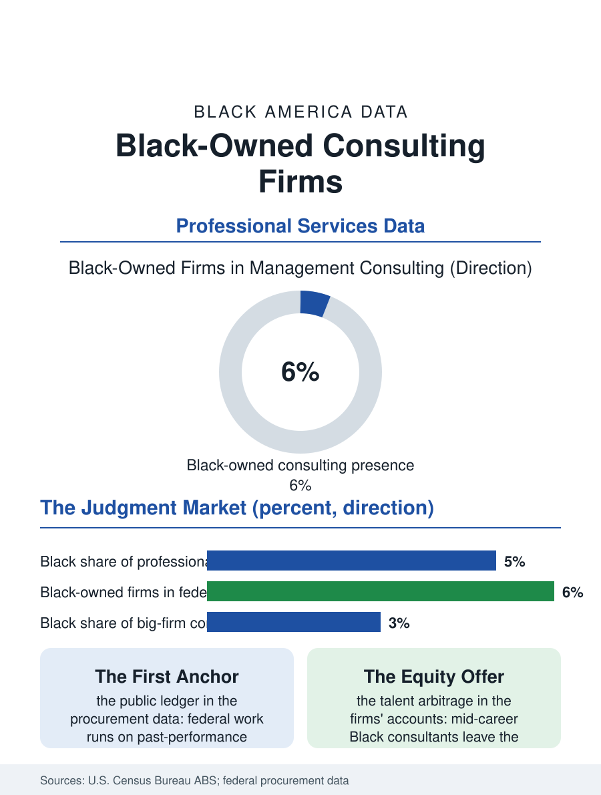

Black Business
Judgment by the Hour: Black-Owned Consulting Firms
Black-owned consultancies sell judgment to governments and corporations in the niches the giants underserve, against a past-performance ledger that gates the first anchor client. The consulting file.

Management consulting sells judgment by the hour at the highest rates in the professional economy, and its ownership tier has a Black face that the partnership counts of the global firms do not suggest: a sector of Black-owned consultancies, from solo practices to firms with hundreds of consultants, winning government and corporate work in niches the giants underserve. The Census Bureau counts Black-owned professional service firms broadly; within consulting, the federal contractor data give the sharpest picture. This article reads the consulting file.
The Niche Is the Strategy
The global consulting industry sorts by brand: the strategy houses, the Big Four's advisory arms, the technology implementers, and beneath them a long tail of specialists. Black-owned firms cluster where the file's logic says they must, in the specializations where incumbency advantages are weakest and domain knowledge is scarcest: government consulting at the federal, state, and municipal levels, where set-aside and subcontracting structures create documented doors; health care and human services consulting, where the client problems sit inside the communities the consultants come from; organizational development, training, and diversity practice, a segment Black firms substantially built as an industry; and technology services, systems integration and cybersecurity support, where cleared and certified talent is the product and the badge matters more than the brand. The economics invert the other professional files in one respect: consulting's capital requirements are minimal, a laptop and a reputation, so the constraint is not capital but access to the first anchor client and the past-performance record that federal procurement worships, a chicken-and-egg ledger the mentor-protege and subcontracting systems exist to break, with mixed documented success. The firms that break it convert one anchor into a practice with the discipline the trade literature describes: narrow the niche, productize the offer, and let the reference do the selling that advertising cannot.
Government Work and Its Seasons
The federal marketplace is the sector's center of gravity, and its data are public in a way no other client's are. Black-owned firms appear throughout the federal contractor registries, concentrated in the professional services schedules, and their revenue patterns show the government market's signature risks: the budget cycle's seasonality, the recompete cliff when a five-year contract returns to competition, and the size-standard graduation problem, where success pushes a firm past the small-business thresholds into open competition against the giants before its balance sheet is ready, a graduation the Small Business Administration's data show claiming promising firms at a recognizable career stage. State and municipal consulting, especially in Black-led cities, provides the sector's second market, and its politics cut as the law firm file described: administrations direct studies, plans, and program evaluations to Black consultancies as both expertise and constituency, and the mature firms hedge electoral turnover by diversifying across jurisdictions and into the corporate market, where supplier diversity programs in professional services, historically weaker than in goods, have strengthened as companies discovered that the problems they most need help with, workforce, markets, community relations, are the problems the Black firms know best. The corporate climb is the file's frontier, because the corporate engagement's economics, rate, duration, and reference value, exceed the public sector's at every tier.
Talent, Leverage, and the Exit
Consulting firms are leverage machines: partners sell, juniors deliver, and the spread between billing rates and salaries is the business. Black-owned firms run the same machine against the talent market's documented tilt, recruiting Black consultants out of the big firms with the ownership proposition the partnership statistics justify: equity on a visible clock rather than a tournament the demographic data say is rigged by tenure. The retention advantage is real in the firms' own accounts, mid-career Black consultants leaving the giants for firms where the path to partner is a plan rather than a hope, bringing their client relationships as dowry. The exit file is thinner: consultancies sell on their partners' relationships, which discount the firm's value to acquirers, so the sector's wealth creation runs through current earnings more than terminal sales, a structural fact that shapes its growth choices toward durable niches and annuity-like managed services. The consulting file closes at the whiteboard in the client's conference room, where the product is quite literally a Black professional's judgment, purchased by the hour by institutions that would not hire that judgment's owner into their own executive suites at the same rate. The firms exist to arbitrage that contradiction, and the federal data record them doing it, contract by contract, in the most relationship-bound market in the economy. Their growth ceiling is not competence and never was; it is the past-performance ledger's first page, and every anchor client won writes it for the firm behind them.
More in Black Business
Black-Owned Businesses: Counts, Receipts, and the Representation Gap
About 161,000 Black-owned employer firms and three million solo ventures: how the Census Bureau counts Black business ownership, where firms concentrate, and the gap between population share and business share.
Black Median Net Worth: The Wealth Gap in Federal Reserve Data
The Federal Reserve puts Black median family net worth at $44,900, against $285,000 for White families — about 16 cents on the dollar. The widest gap in economic data.
Black Buying Power: The $1.8 Trillion Consumer Economy
Black buying power is estimated at about $1.8 trillion — larger than the economy of most nations. What the figure measures, who produces it, and what it buys.
Source: U.S. Census Bureau, Annual Business Survey (NAICS 54161); federal procurement data system records; Small Business Administration data.